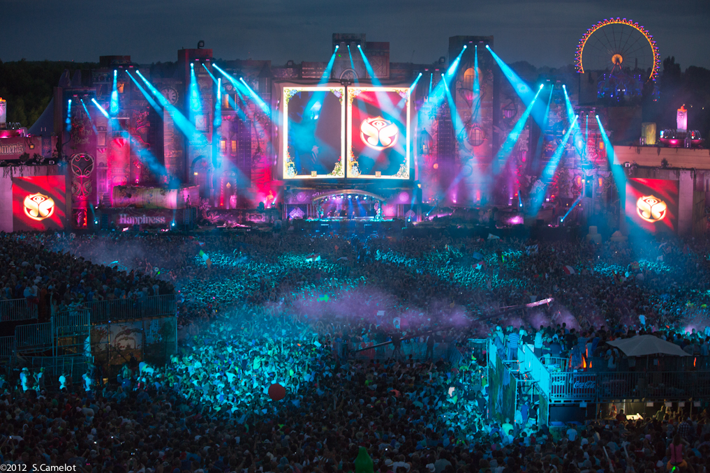

tomorrowland

HISTORIA DE TOMORROWLAND
Los primeros festivales
Tomorrowland surgió de los hermanos belgas y promotores de eventos Manu y Michiel Beers. Su empresa, ID&T, preparó todo para hacer un festival localizado en Boom, un municipio de Bélgica. La primera edición se celebró el 11 de agosto de 2005, y solo duró ese día. Ante la incertidumbre por un posible fracaso, se llegaron a regalar entradas para poder llenar al máximo los distintos escenarios, algo impensable hoy en día. Eso sí, solo podían acceder al evento residentes en Bélgica, lo que limitó la asistencia a 9.000 personas.
Los promotores consideraron que el festival había funcionado, por lo que decidieron repetir al año siguiente. La proliferación de vídeos aftermovie sirvió como una ventana para el mundo de lo que podía llegar a ser Tomorrowland. Fue gracias a su trabajo en las redes sociales que Tomorrowland comenzó a comerle terreno a Misteryland, el otro gran festival de música del momento. Para 2006, se tomó la decisión de mejorar el escenario principal y todos los equipos de música. Las paredes mostrarían el logo original de Tomorrowland junto a un ojo avizor, algo que ya nos daba pistas sobre a dónde se encaminaba su mitología. Por otro lado, el número de asistentes se ampliaría a 15.000, todavía mayoritariamente belgas y de alrededores, que quedarían maravillados por las actuaciones de Armin van Buuren, David Guetta, Fred Baker, DJ Zany, Ruthless y Marco Bailey, entre otros.
Tras la segunda edición, los hermanos Beers se dieron cuenta del potencial que tenían entre manos, y tomaron medidas para aumentar el impacto de Tomorrowland, como añadir un segundo día de festival y ampliar el número de entradas hasta las 50.000.

2007 y 2008 supondrían el punto de inflexión para el reconocimiento mundial de Tomorrowland. A partir de entonces, personas de todas las nacionalidades empezaron su peregrinación anual a Boom, así como los DJ, que se peleaban por hacerse un hueco en el cartel. La edición de 2008, con más de 100 DJ, incluyó en su escenario principal por primera vez una especie de animal mitológico saliendo por encima de las cabezas de los artistas, decoración que dio la vuelta al mundo por su originalidad. Con esta celebración, se marcaría el principio del fin de las lonas sujetadas por andamios de las primeras veces.
Comienza el mito
Para no repetirse durante los siguientes festivales, se decidió que cada Tomorrowland tuviera una temática para el escenario principal. Gracias a esto, contamos con un buen repertorio de decorados en su historia. En 2009 se presentó 'The Masker' a los más de 80.000 asistentes, un decorado de una cara gigante con un bigote y pintalabios rojo. En el interior de su sonrisa se localizaba la mesa de mezclas en la que estarían los artistas. También se incluyó un mejor equipo de sonido y se dispusieron pantallas a los laterales por primera vez. Se notaba que se lo estaban tomando todo muy en serio.
Los organizadores quisieron dar un paso más en la temática de escenarios, así que se plantearon contar historias y conceptos a través de los decorados. Con esta premisa, en 2010 se construyó 'Zon' (Sol), para transmitir la historia del sol y las ideas relacionadas sobre el mundo natural brillando a través de él. Fue toda una novedad que agregaba varios elementos extra, a pesar de que ahora, con el paso de los años, nos pueda parecer algo simple. En esta edición, Swedish House Mafia y David Guetta rompieron todos los récords de gráficos y generaron una masa de histeria entre los 120.000 asistentes.
En 2011, el festival anunció que, a partir de entonces, contaría con una duración de tres días. La noticia fue muy bien recibida y la preventa de entradas atrajo a más de 180.000 personas. La temática 'The Three of Life' presentaba un bosque encantado con piruletas y setas, con la cara de la madre naturaleza en el centro del escenario. David Guetta, Steve Aoki, Nervo, Swedish House Mafia, Avicii, Tiësto, 2ManyDJ y Carl Cox fueron algunos de los artistas que actuaron. Por todo en lo que se había convertido, Tomorrowland fue elegido el mejor festival de música electrónica del planeta en la International Dance Music Awards.
La edad de oro
Más de 400 DJ conformaban la lista de participantes de Tomorrowland en 2012, que se presentaba con la temática 'The Book of Wisdom'. El escenario principal estaba compuesto por una librería con un libro central narrador, que contaba la historia del porqué de esta temática. Además, al pasar las páginas, también explicaba la carrera de los artistas o "contadores de cuentos". En esta ocasión, la empresa decidió dar a la población belga acceso anticipado a la pre-venta de un número de entradas, como en sus orígenes. El coste se había disparado, pero mereció la pena para los más de 180.000 asistentes.

El festival de 2013 presentó el tema 'The Arising of Life', con un escenario principal volcánico. La estructura expulsaba fuegos artificiales por el cráter, entre el júbilo de los festivaleros de más de 200 países que se congregaron en el evento. Los artistas más aclamados fueron Hardwell, Dimitri Vegas & Like Mike, Steve Aoki, Tiesto y Avicii, entre otros.
Para expandir la marca Tomorrowland todavía más y convertirlo en un fenómeno sin precedentes, los hermanos Beers vendieron la empresa ID&T bajo la que organizaban el festival a la promotora de eventos estadounidense LiveStyle en 2013. De esta forma, la edición de 2014 terminaría por consolidar a Tomorrowland en la élite de los festivales, realizando de paso otros shows con el nombre de la marca por el mundo.
En lo que respecta al evento original, la principal medida que tomó LiveStyle fue la de ampliar Tomorrowland a dos fines de semana. En cuanto al tema del escenario principal, 'The Key to Happiness' pretendía reflejar un mundo de fantasía y un cuento de hadas algo más sofisticado y mecánico, con una cara bondadosa encima de la cabina de los DJ. 360.000 personas (180.000 cada fin de semana) de todo el mundo se reunieron para ver las actuaciones de Hardwell, Tiesto, Armin Van Buuren, Dimitri Vegas & Like Mike, Alesso, Skrillex o Martin Garrix, entre muchos más. Al igual que con el decorado del año anterior, todas las estructuras fueron llevadas a TomorrowWorld, el hermano estadounidense del festival nacido en 2013, justo después de la compra de LiveStyle.
La duración del evento volvió a sus tradicionales tres días de fin de semana para 2015, para los que las entradas se agotaron en menos de 40 minutos. Para el escenario principal se construyó una catedral gótica de la música dance, bajo la temática 'The Secret Kingdom of Melodia'. Se trataba del decorado más imponente, potente y grande hasta la fecha, con una altura impresionante. Los artistas 3 Are Legend, Afrojack, Alesso, Armin Van Buuren, Axwell A Ingrosso, Carl Cox, David Guetta, Dimitri Vegas & Like Mike, Hardwell, Oliver Heldens, Steve Aoki, Tiesto, W&W y DVBBS, entre otros, sorprendieron a los más de 180.000 asistentes con las actuaciones más increíbles de los últimos años. Hay que recordar que durante esta época, y en parte por el interés generado por Tomorrowland, la música electrónica subió su popularidad como la espuma.
La edición de 2016 nos dejó con una espinita clavada: la ausencia de Hardwell. El DJ más aclamado del momento no asistió al festival y el público armó unas cuantas teorías extravagantes sobre el motivo. Por otro lado, después del homenaje a la arquitectura del año anterior, la nueva temática 'The Elixir of Life' trajo la naturaleza de nuevo a Tomorrowland. Todo el escenario principal se llenó con el decorado de un bosque escondido, igualito a los de los cuentos de hadas. Dimitri Vegas & Like Mike, David Guetta, Axwell A Ingrosso, Martin Garrix, Tiesto, Solomun, Don Diablo, Afrojack, Marshmello, Alesso, Steve Aoki, W&W, Armin van Buuren, The Chainsmokers, Steve Angello, DVBBS y muchos otros cubrieron la baja del holandés más popular de la música electrónica, y no defraudaron.
Más tiempo para la fiesta
En 2017, Tomorrowland volvió a celebrarse durante dos fines de semana. De este modo, más de 400.000 personas pudieron disfrutar de Armin van Buuren, David Guetta, Alan Walker, Afrojack, Axwell A Ingrosso, Alesso, Alok, Don Diablo, Zedd, Duke Dumont, Eric Prydz, Fatboy Slim, Yellow Claw, Kolsch, Ferry Corsten, Martin Garrix, Tiesto, Paul van Dyk, Oliver Heldens, Solomun y muchos más. Para esta edición se decidió crear un ambiente circense con el tema 'Amicorum Spectaculum'. Se construyó una carpa de circo repleta de detalles y artistas en la cuerda floja en el escenario principal, con algunas atracciones de feria a los lados
La ampliación de la duración de Tomorrowland había demostrado ser más que rentable, por lo que LiveStyle decidió repetirlo. La edición de 2018 volvió a celebrarse los últimos dos fines de semana de julio. Para deleitar a los asistentes, la temática 'The Story of Planaxis' les trajo un mundo de fantasía subacuática. El escenario principal se transformó en una mezcla submarina de caracolas, medusas, corales y la pieza central: un caballito de mar gigante. Por otro lado, el festival también fue con todo con los artistas invitados. Afrojack, Alan Walker, Alesso, Alison Worderland, Armin van Buuren, Axwell A Ingrosso, Benny Benassi, Cosmic Gate, David Guetta, Dimitri Vegas & Like Mike, Don Diablo, Dua Lipa, Fatboy Slim, Fedde Le Grand, Hardwell, Marco V, Martin Garrix, Marshmello, Oliver Heldens, Steve Aoki y Francisco Allendes son algunos de los nombres que enloquecieron a los más de 400.000 asistentes.
Para celebrar una ocasión especial como es el 15º aniversario, en 2019 los hermanos Beers, todavía importantes a nivel de decisión, quisieron traer de vuelta la temática de 2012 con 'The Book of Wisdom The Return', la épica librería que para muchos sigue siendo la decoración más original. La librería reabrió sus puertas en 2019, pero mucho más grande que antes y con más libros colocados en diferentes posiciones. Se notaba que el volumen del evento ya no era el mismo, ni de lejos. La venta de entradas se agotó a los pocos minutos de salir, y de nuevo se superaron las 400.000 personas.
por motivos de la pandemia del covid19 no se pudo celebrar Tomorrowland durante 2 años
de vuelta a la fiesta
La decoración de 2022 pretendía dar la sensación de pertenecer a una celebración de ciencia ficción de buen corazón. "The Reflection of Love" quería ser un especie de tierra santa, un lugar de ceremonias y rituales para los asistentes. La estructura del altar central, que era todavía más alta que la de 2015, se pintó de blanco y dorado con toques morados. Este, para sus organizadores, ha sido el escenario más ambicioso de su historia, y no es para menos. La duración de tres fines de semana y la expectación por volver a este icónico festival no podía ser mayor, así que había que darlo todo. Con más artistas, público y música que nunca, Tomorrowland está de vuelta.